|
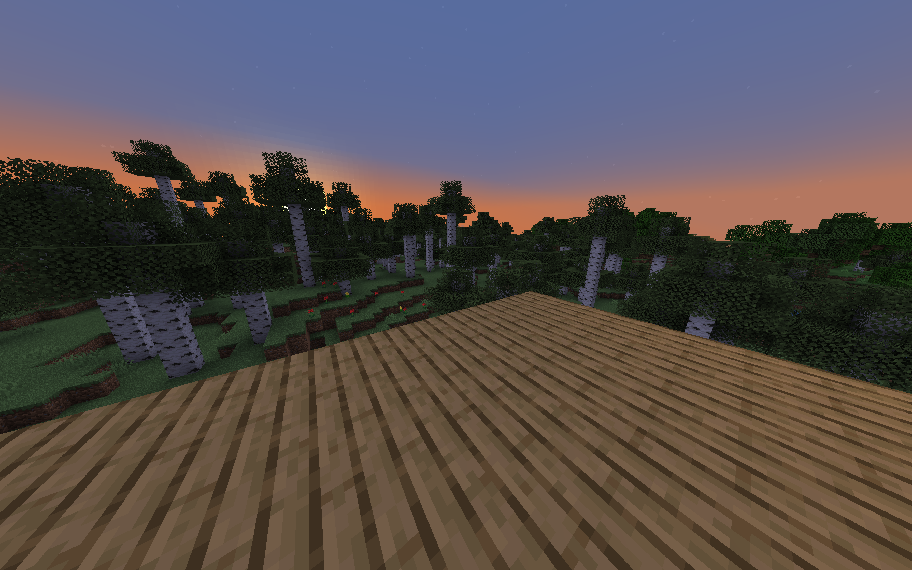
|
Our final project involved writing our own shaders in Minecraft in order to introduce different graphical effects that the base game lacks. We implemented shadow mapping, bloom, screen space reflections, rippling water and swaying leaves, and atmospheric lighting. These effects, when combined together, provide a more immersive gaming experience with the improved visuals. Below is a showcase video highlighting some of our features, with some high-level overviews of our implementations:
At a high level overview, shadow mapping is just casting a shadow on pixels that do not have a direct line of sight to the sun.
In theory, it's easy but the implementation was a lot more involved. We followed the reference at this OpenGL tutorial.
To start, we used shadowtex0, which is a shadow map that is provided by Optifine. We then use matrix calculations on our texture coordinate to move it into shadow space. This is accomplished by first moving to world space, and then shadow space. We compare texture coordinate sample to its equivalent point in the shadow map. If the depth of our texture is greater than that of the shadow map, our texture is further away from the sun, meaning it is in a shadow.
After implementing this check, we need to also implement a distortion algorithm for the shadows. The algorithm we chose was augmenting the x and y by (cuberoot(abs(x^3 + y^3))). We also scaled the z by 1.2. This algorithm was chosen based on trials we did with different algorithms. Ultimately, this one worked the best.
How we specifically chose to ultimately write the shadow was based on a check if the normal of the texture was perpendicular to the normal of the sun. The reason for this is that without this check, we get weird fragmenting on the sides of blocks due to small calculation errors.
This effect took the longest to debug. We tried various methods such as clamping some values and changing the distortion algorithm.
In the end result, we were able to create these great shadow effects.
Bloom is a post processing effect that aims to reproduce the glow effects we see in real life of emissive objects. There are two main approaches to implementing a bloom effect: an HDR bloom and a thresholding bloom. We chose the latter because of limitations in the optifine pipeline; however, HDR bloom is indeed possible to implement.
For thresholding bloom, we want to first find the bright blocks, draw that to a separate texture, blur this texture, then blend it back into the original. In order to find the bright blocks, we first have to calculate perceived brightness, or relative luminance. We dot the color vector with a predefined constant vector that reflects the luminance efficiency function we learned in lecture. The colors that exceed a certain threshold are counted as “bright”. A problem we faced is that because there is no HDR support, there is effectively no difference between a white flower and a glowing torch. To combat this, we checked block ids and if the block didn't count as an emissive object, the overall bloom was heavily attenuated. If the threshold was not met, black is returned.
|
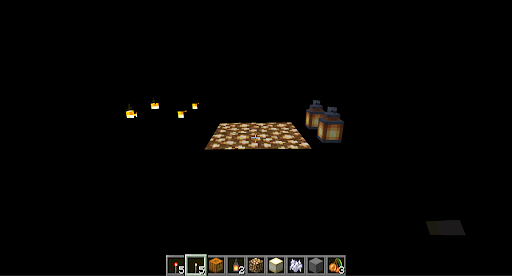
|
After writing the bright textures to a separate drawbuffer, we want to blur it. A common technique is to use a Gaussian filter for a smooth and natural blur. While easy to implement naively, it is extremely inefficient. With a modest filter size of 30, each fragment will take at least 900 samples. In practice, this drops framerates on a powerful graphics card from over 165 frames to about 30 frames a second. Thankfully, a great property of the Gaussian is that it is a separable equation. Therefore, we create two separate passes, one for the horizontal blur and one for the vertical blur. This significantly reduces runtime, now 60 samples, and creates the same effect. To add an even grittier (and subjectively better) look to the final bloom, we blurred further with two passes of a box filter. Finally, we add this texture to the original to complete the effect:
|
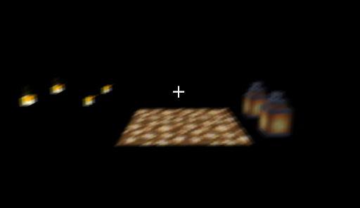
|
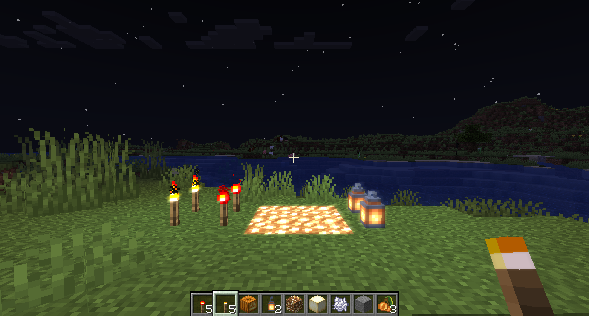
|
As an aside, implementing an HDR bloom does not require the bright light extraction step; we simply blur and blend together with a strong bias towards the original HDR texture and we get a great bloom effect. This is because with HDR, bright colors are inherently biased.
We learned that multiple passes are extraordinarily useful not only for clean and integrable code but also for implementing separable filters!
In this section, we implemented atmospheric lighting. In base minecraft, the sun and the moon are merely textures placed in a monocolor sky. As such, they look like they have little to no illumination:
|
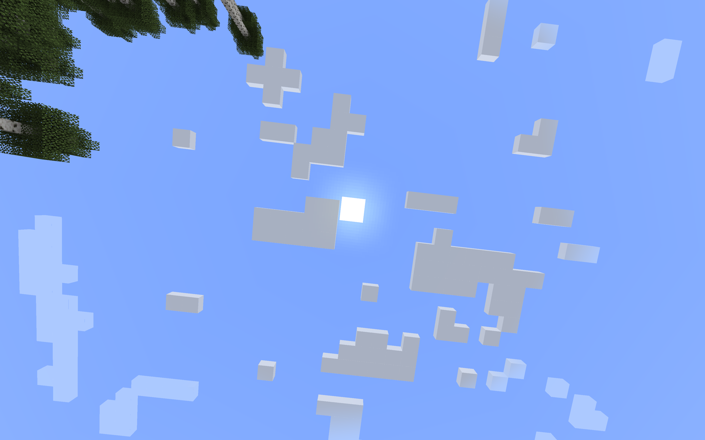
|
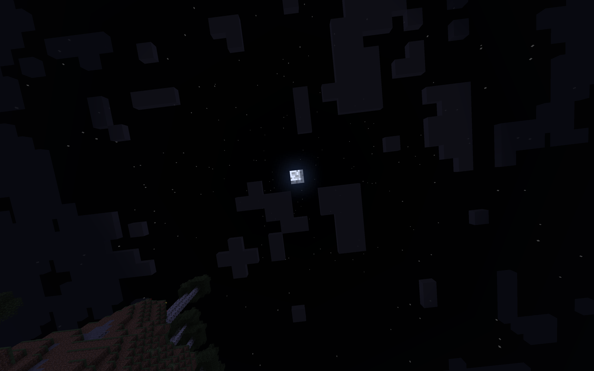
|
However, in reality, the atmosphere enhances ambient lighting by scattering light from the sun or moon. For visual effect, we can achieve this by treating the sun or moon as an illuminating object in the sky, and then incorporating their radiance into nearby sky fragments in the fragment shader step with some sort of radiance falloff rule.
The main problem encountered in this task was that Minecraft does not render any physical sun, moon, or sky blocks, so we could not use Euclidean distance between two objects in our distance calculations. Instead, these entities are represented as coordinates in view space, and thus can be treated as normalized vectors from your viewing position to the angular position where the sun, moon, or target fragment of sky is. We use this information to simulate a “distance to the sun/moon” metric by projecting the view vector of the sky fragment onto the sun/moon vector, where the shorter the projection is, the farther away the sky fragment is. We then used this distance metric in our calculations to determine how much light and color we should add from the sun/moon to the relevant sky fragments. One thing to note from lecture is that we learned that irradiance falloff follows the inverse square law in the real world, but sometimes it has to be changed for visual effect. This idea definitely applied here, as we made it such that irradiance varied inverse-10th-ly, otherwise we thought that the illumination would extend too far.
Shown below are pictures of sun and the moon with atmospheric lighting incorporated:
|
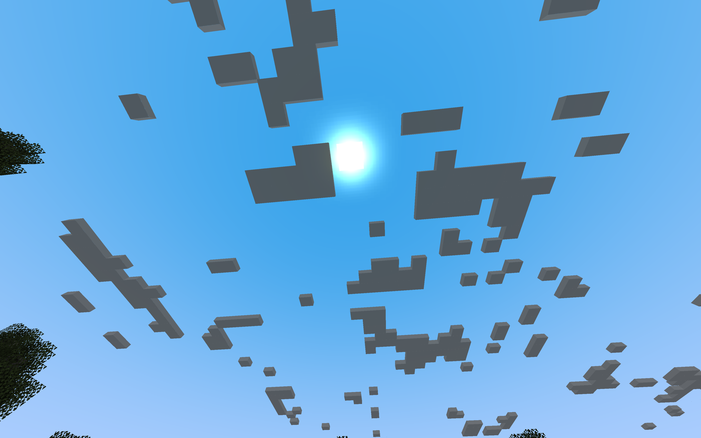
|
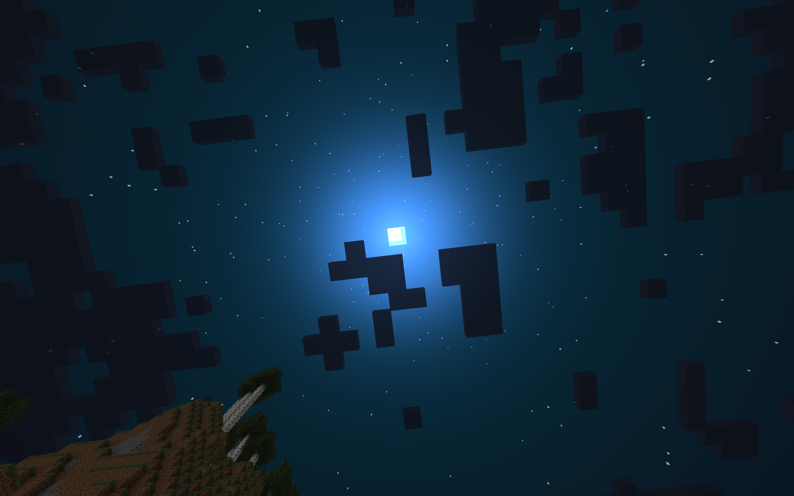
|
We can see that with atmospheric lighting, the sun and moon spread light to their surroundings, and the illumination falls off with distance, but even then, the overall color of the sky changes subtly during both the day and the night.
In the real world, atmospheric lighting is most prominent along the horizon, when the rays come in at a flatter angle and thus scatter more. Minecraft's base sky has a pretty clear delineation between the sky texture and where the base game attempts to transition to the horizon, which is not accurate to reality. This delineation is most prominent during sunrise:
|
|
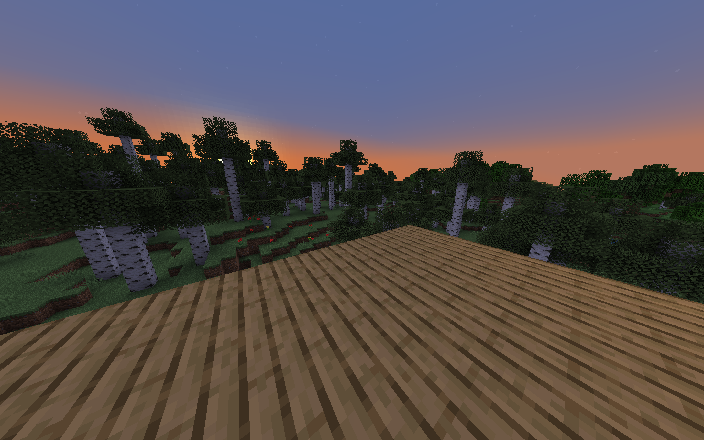
|

|
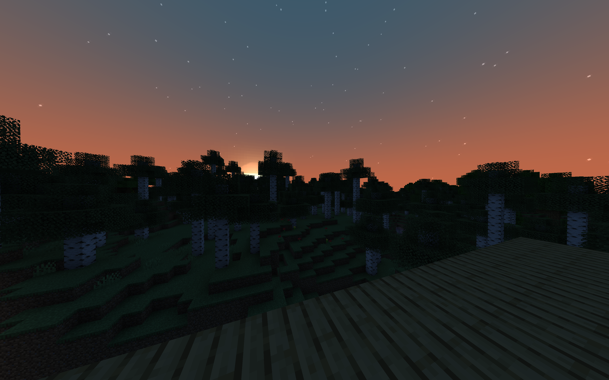
|
We implemented screen space reflections to cast realistic reflections on water surfaces. We referenced 3d game shaders for beginners and optimization techniques for screen space reflections to help implement this. In screen space reflection we cast a ray in view space from the player to the water block we want to reflect onto and reflect the ray about the normal of the water block. We trace along the reflected ray, at each step comparing the depths for intersection. If the thickness, sampled ray depth - sample depth is greater than 0, then we consider that the ray has hit something that should be reflected onto the water. We implemented this by calculating the view position and reflecting it across the normal of the water block and multiply it by a step size of 0.1 to get an increment of the ray tracing.
|
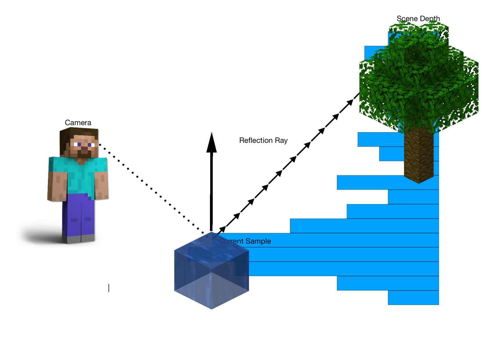
|
For some number of steps (we used 32) we traced along the ray and checked if the thickness is between (0, 0.5) from sampling the screen position at this point in the ray with the OptiFine-provided depth buffer depthtex0. If the ray hits something, we sample the texture color at the screen position and mix it with the water color to create the reflection.
The articles we referenced suggested optimizations such as binary search to find the intersection point and loop unrolling. However, our implementation in Minecraft simply looping over the number of steps already produced minimal extra lag. A bug we ran into initially was that stretching and artifacting would occur when a ray tries to reflect something from off the screen due to the limitation of screen space reflections. The initial fix was to simply limit traced results to within the bounds of the screen with x and y in [0, 1]. However, this introduces a sharp fall off from some perspectives where you can clearly see the edges of where screen space reflections can reach. The additional fix was to add a fade effect into the color mixing. Based on the distance of the screen position from the center of the screen at 0.5, the colors would be mixed less strongly. The rendering of the reflections is performed in a composite pass where we check if the current block is water and that the player is above water.
Shown below is a comparison of minecraft water without and with screen space reflections:

|

|
We implemented rippling water and swaying leaves modeled by sin and cos functions. Based on these functions, the position of the blocks are slightly displaced. The functions vary based on worldTime or ticks in Minecraft so they will vary over time, producing the swaying effect. The rippling water also has the nice effect of distorting some of the artifacting caused by misses of the screen space reflection ray tracing.

|
Finally, we were able to put it all together. Shown below are a few images of our completed shaderpack in action:
|
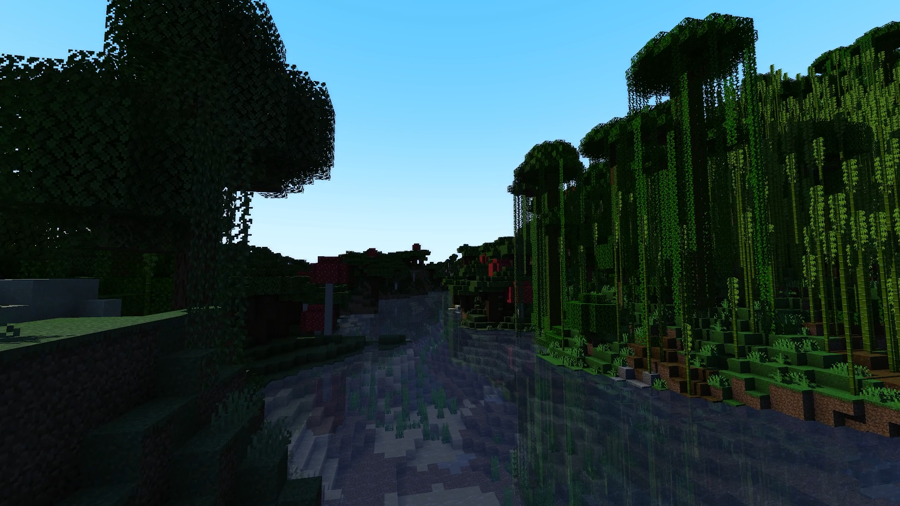
|
|
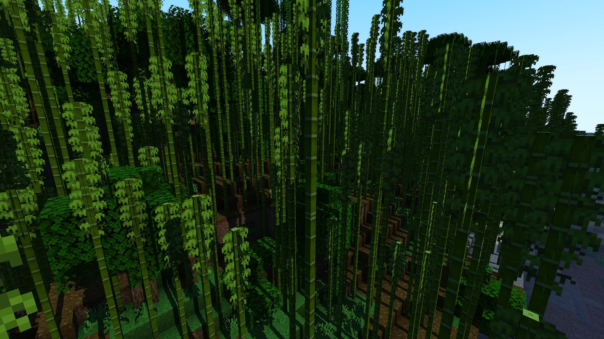
|
|
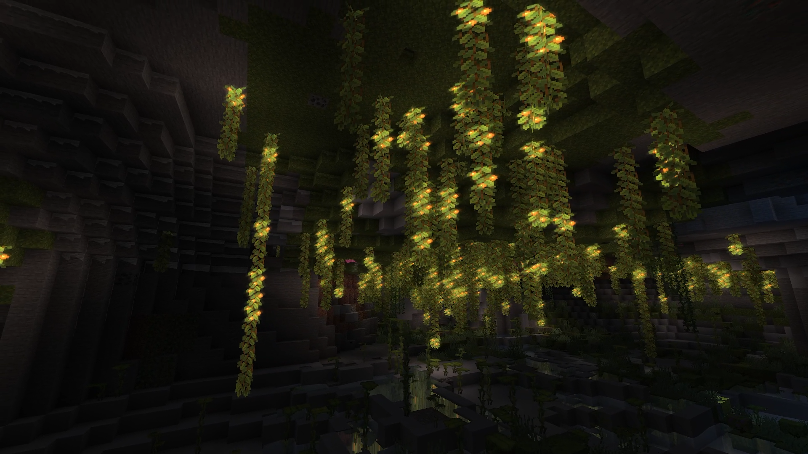
|
|
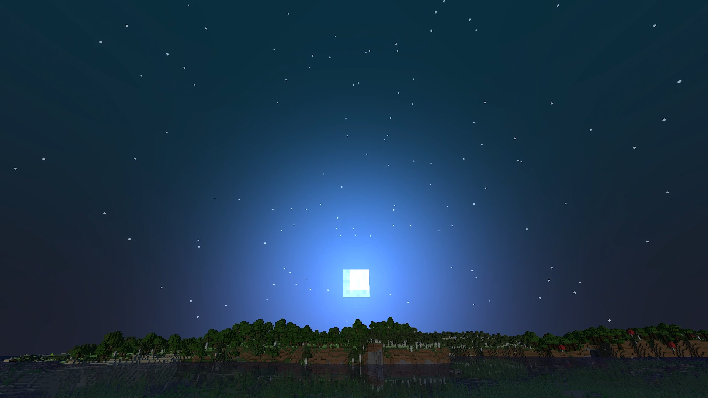
|
Overall, we had a lot of fun doing this project. It was cool to see the results shine through in game, and it brought back some nostalgia of playing minecraft when were younger, but now we're able to develop for the game ourselves!
https://optifine.readthedocs.io/shaders_dev.html#overview (documentation for OptiFine rendering)
https://lettier.github.io/3d-game-shaders-for-beginners/screen-space-reflection.html (Screen-space reflection implementation)
https://sugulee.wordpress.com/2021/01/16/performance-optimizations-for-screen-space-reflections-technique-part-1-linear-tracing-method (Screen-space reflection optimization)
http://www.opengl-tutorial.org/intermediate-tutorials/tutorial-16-shadow-mapping/ (Shadow mapping)
We used OpenGL/GLSL for our implementation as that is what Minecraft and OptiFine use. We also started with a baseline Optifine shaderpack, with a set of the base files for us to modify, but only having the native minecraft features.
Shawn worked on atmospheric lighting and putting the final website together.
Massimo worked on bloom, and got it working with shadow mapping, as the two components often interfered with each other.
Jason worked on screen space reflections and the rippling waves and swaying leaves. He also compiled the final shaderpack, and edited the final demo video.
Joey worked on shadow mapping and initially put all of the work together to resolve any file conflicts.
Each team member wrote about their own section of work in the webpage, recorded their own sections of work for the demo videos, and presented their own sections of work during the presentations.